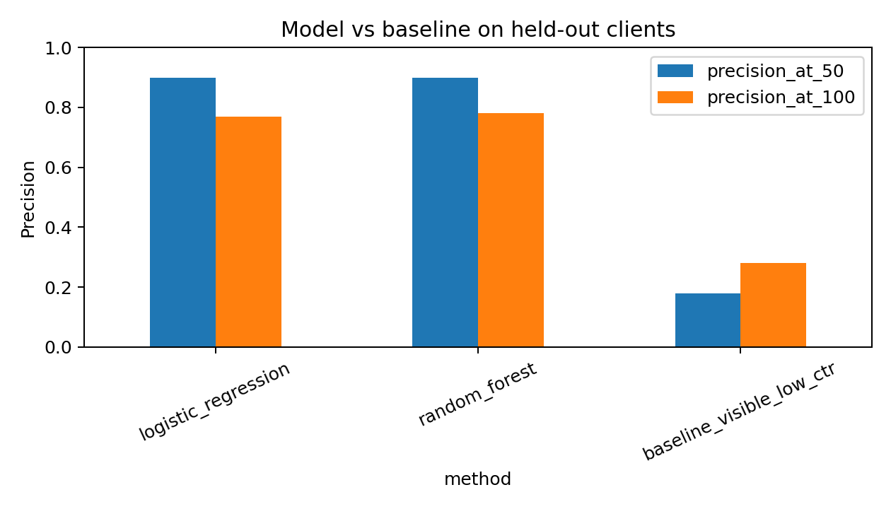
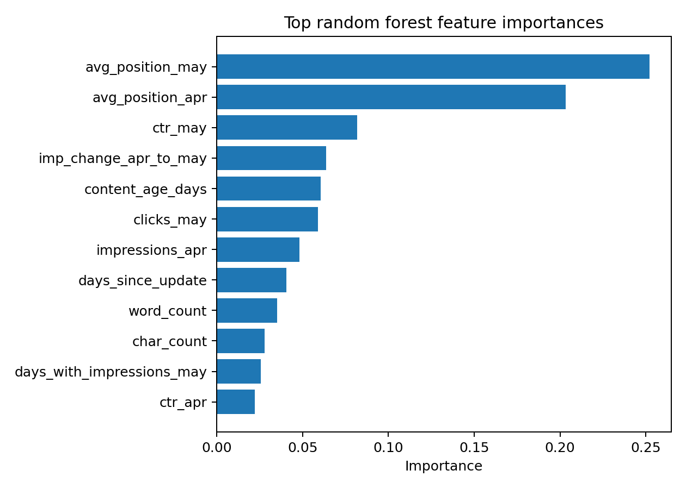
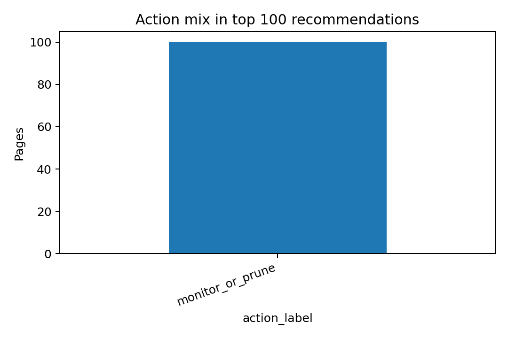

Title + Abstract
This project asks which content pages should be reviewed first when a team has limited time and wants to catch future search visibility decline. I used the FlyRank internship warehouse release, building features from August and September 2025 and labeling future decline in October 2025. The method compares a transparent visible-low-CTR baseline against logistic regression and random forest models under a client-holdout split. On held-out clients, the selected random forest reached Precision@50 of 0.900, compared with 0.180 for the baseline. The result is a decision-support queue for human review, not proof that any edit will cause recovery.
Introduction / Problem Statement
Content teams cannot review every page every week. The practical decision is: which page should be inspected first for refresh, monitoring, pruning, or title/meta review?
The unit of analysis is one pseudonymized content item. The output is a ranked queue with action labels and reason codes. A wrong recommendation can waste editorial time, while a missed recommendation can leave a meaningful decline unreviewed.
Data
The analysis uses the public-safe FlyRank/internship-warehouse release. It reads monthly partitions from fact_content_daily_performance plus safe metadata from dim_content and client coverage context from dim_clients.
| Item | Value |
|---|---|
| Release | FlyRank/internship-warehouse v20260703 |
| Feature window | 2025-08-01 through 2025-09-30; final feature month 2025-09 |
| Target window | 2025-10-01 through 2025-10-31 |
| Label | future_decline_label = October 2025 impressions < 80% of September 2025 impressions |
Excluded from features: October metrics, raw/private URLs, domains, queries, credentials, and any product decision flags. Pseudonymized IDs are used only for joining, grouping, and client-holdout splitting.
Methodology
The baseline is a single transparent rule from the Week 4 notebook: prioritize visible pages in positions 1-20 with CTR below 0.50%. The model feature set includes September traffic, CTR, average position, engagement context, AI-session count, August-to-September movement, content metadata, and content age.
Validation uses a grouped split by client: 14 clients for training and 4 held out for testing. This avoids mixing pages from the same client across train and test.
Results
The random forest and logistic regression both strongly outperformed the visible-low-CTR rule on the held-out client split. The selected random forest tied at Precision@50 and had the strongest ROC AUC, average precision, and Precision@100.
| Method | ROC AUC | Average precision | Precision@50 | Precision@100 |
|---|---|---|---|---|
| logistic_regression | 0.853 | 0.729 | 0.900 | 0.770 |
| random_forest | 0.871 | 0.740 | 0.900 | 0.780 |
| baseline_visible_low_ctr | 0.471 | 0.258 | 0.180 | 0.280 |


Top model signals
- avg_position_may: 0.252
- avg_position_apr: 0.203
- ctr_may: 0.082
- imp_change_apr_to_may: 0.064
- content_age_days: 0.060
- clicks_may: 0.059
- impressions_apr: 0.048
- days_since_update: 0.040
Limitations & Honest Framing
This is an observational decision-support model on one warehouse time slice. Some top-ranked pages are deep-position, zero-click pages; those may be better candidates for monitoring, pruning, consolidation, or investigation than for immediate refresh work.
Ranked Recommendations
The queue combines model probability with the transparent baseline score and emits reason codes. A human reviewer should inspect the context before acting.
| Rank | Content id | Score | Action | Reason codes | Sept impressions | CTR | Avg position |
|---|---|---|---|---|---|---|---|
| 1 | content_e5119f5ccb21b8be | 69.31 | monitor_or_prune | future_decline_risk;deep_zero_click_risk | 256 | 0.00% | 80.7 |
| 2 | content_84332ce4be404e3f | 69.27 | monitor_or_prune | future_decline_risk;deep_zero_click_risk | 306 | 0.00% | 76.7 |
| 3 | content_e02ca086a84cfd35 | 69.14 | monitor_or_prune | future_decline_risk;deep_zero_click_risk | 228 | 0.00% | 81.0 |
| 4 | content_ad0b68d1727295e3 | 69.11 | monitor_or_prune | future_decline_risk;deep_zero_click_risk | 304 | 0.00% | 82.6 |
| 5 | content_905103df18204769 | 69.10 | monitor_or_prune | future_decline_risk;deep_zero_click_risk | 263 | 0.00% | 75.0 |
| 6 | content_dcdb257bd5040270 | 69.09 | monitor_or_prune | future_decline_risk;deep_zero_click_risk | 241 | 0.00% | 84.5 |
| 7 | content_305afb885f6a3b9c | 69.08 | monitor_or_prune | future_decline_risk;deep_zero_click_risk | 537 | 0.00% | 78.4 |
| 8 | content_df405a5ed66aab92 | 69.07 | monitor_or_prune | future_decline_risk;deep_zero_click_risk | 308 | 0.00% | 75.6 |
| 9 | content_7faa8052b9d6529d | 69.06 | monitor_or_prune | future_decline_risk;deep_zero_click_risk | 375 | 0.00% | 84.6 |
| 10 | content_80be8e495d9ac06a | 69.04 | monitor_or_prune | future_decline_risk;deep_zero_click_risk | 418 | 0.00% | 79.4 |

Reproducibility
Code and notebooks live in the public repository: https://github.com/omarfoud/fly_rank_starter.
- Capstone analysis script
- Capstone notebook
- Model notebook
- Validation audit notebook
- Action playbook notebook
To rerun from a fresh clone, install the repo requirements, log in to Hugging Face with a read token that has accepted the dataset gate, then run python work/scripts/run_capstone_analysis.py.
Acknowledgments & Data Credit
Built on the FlyRank ML Internship dataset. Data source credit: FlyRank.